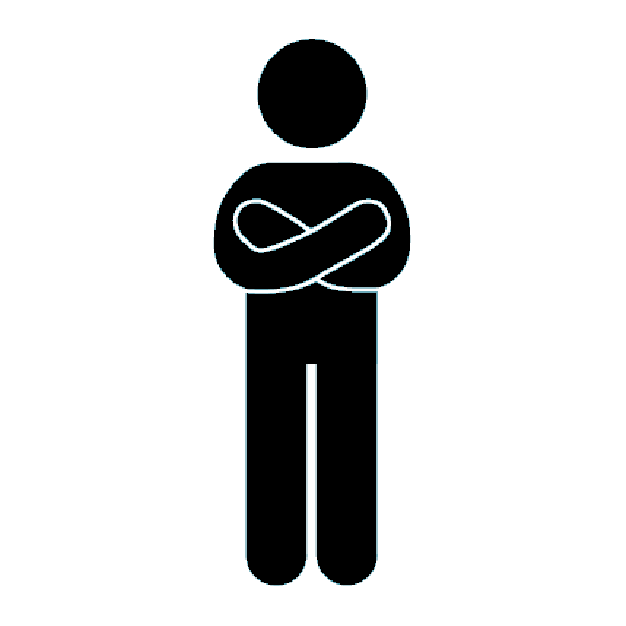

Artifact 0, also known as the Multimodal Diagnostic Video, was the first assignment that we were challenged to work on for ENGL 1101 course. At first look, it seemed like an assignment seeking to give the faculty an idea of the common mindset the enrolled students, but it was actually a challenge for the students to test their then WOVEN communication skills. I started out with a small script I prepared to aid myself during the recording in Clough Undergraduate Learning Center and soon realized this was a task that was not as simple as it seemed (again, in the first look). 85 retakes, six hours of work, and a ton of experience in oral and visual communication later, here is what I came up with.
Tackling the Spoken: Fear vs ENGL 1101
Communicating your ideas is one of the crucial parts of any business / non-business transaction, and to be able to communicate your ideas orally has often been one of the quickest ways to pitch opinions. In a world where people do a bit over a million transactions every second, it becomes crucial to master the skill of efficiently embedding your thoughts in the minds of the listener by eloquent usage of words and voice.
About Me
Personally, conveying thoughts and proposing ideas through speech has always been a challenge for me. Be it speaking in front of the entire school or in soliloquy, fumbling over the log of voice modulation to bring out the hidden beauty of excellent choice of diction and mind-boggling facts is a place where I am often at my wit’s end.
The dreadful thought of tripping during an important speech / presentation still haunts me: The moment I messed up an introduction speech in an annual event of my high school just because I was too occupied with the thought, “Rachit, you ought not to bring in non-perfection today,” could be prevented, otherwise. Being afraid from a challenge is what most of the players are afraid of, and this fear of not performing well in the task is often what is to blame rather than the player himself.
Facing a problem head-on is a solution I recently figured out to exist while I was working on perfecting my singing skills for my (Vocal) Music class in Grade 12. Some people might consider this method to be inadequate since this might exhaust the user of this technique, but in my opinion, that’s worth the results. ENGL 1101 is a course which offer tons of similar assignments where you are challenged to communicate your thoughts through the WOVEN method, with the Oral method being one of them. Preparing video artifacts, developing group podcasts, and giving general presentations are just some of the tasks that the course participants are required to tackle – all of which directly require exploiting the oral communication skills.

My Course Objectives
By the conclusion of this course, I intend to master the skill of using all of the modes of the WOVEN method of broadcasting ideas – be it to an individual in a chamber or the entire university, hopefully, during the sophomore welcome at the upcoming freshmen convocation. I hope to grab in all the arrows of tips thrown at the class by the professor and my classmates throughout the semester, and I intend to conclude the year with a quiver full of new skills adding in to my game of archery of life.
WOVEN Method
Written
Oral
Visual
Electronic
Non-Verbal
- The primary objective of this assignment was to become acquainted with your own skill-sets.
- Further, it was an opportunity for the students to learn more about the overall course while also knowing how the course could help on a longer run.
- This assignment was also a chance for students to reflect upon their current communication skills with the WOVEN method of communication in mind.
- Through this course, I was looking to work specifically on my oral communication skills, and that is what I needed to mention in this artifact.
- I made it explicit by talking about how I used to be a few years ago when it came to oral communication, to mentioning how I messed up a speech at my school, to also talking a bit about my goals at Georgia Tech.
- For this assignment, my intended audience is anyone who is willing to know a bit more about ENGL 1101 course and someone who is interested in knowing what I expect to learn from the course.
- I make the choice of my intended audience clear in the artifact by starting from talking about the challenges I was facing because of my limited oral communication skills to talking about how a course like ENGL 1101 can help tackle those challenges.
- The genre and media used in this artifact is mainly the presentation of thoughts and ideas through a video (visual, oral, and non-verbal).
- I used my mobile phone to record most of the videos during the preparation of this artifact and later used Movavi Video Suite to compile all the clips into the final video.
- Since there were no restrictions placed on the way we could develop this artifact, I went to different places to record myself to better align the background with my thoughts.
- If I had more time for revision, I might have worked a bit more on how I presented my ideas in the video, and perhaps, also recorded certain parts again to better reflect my ideas.
- Also, I might have used different more relevant location in the background in some parts of the video to blend in better with what I was talking about.